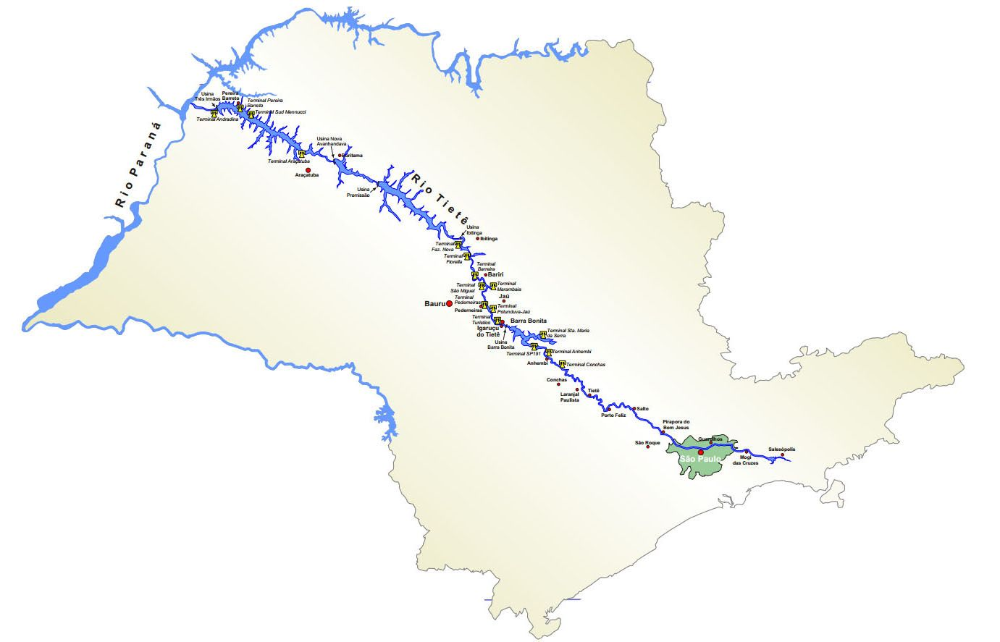
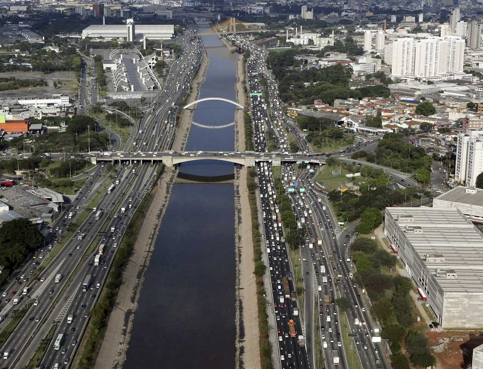
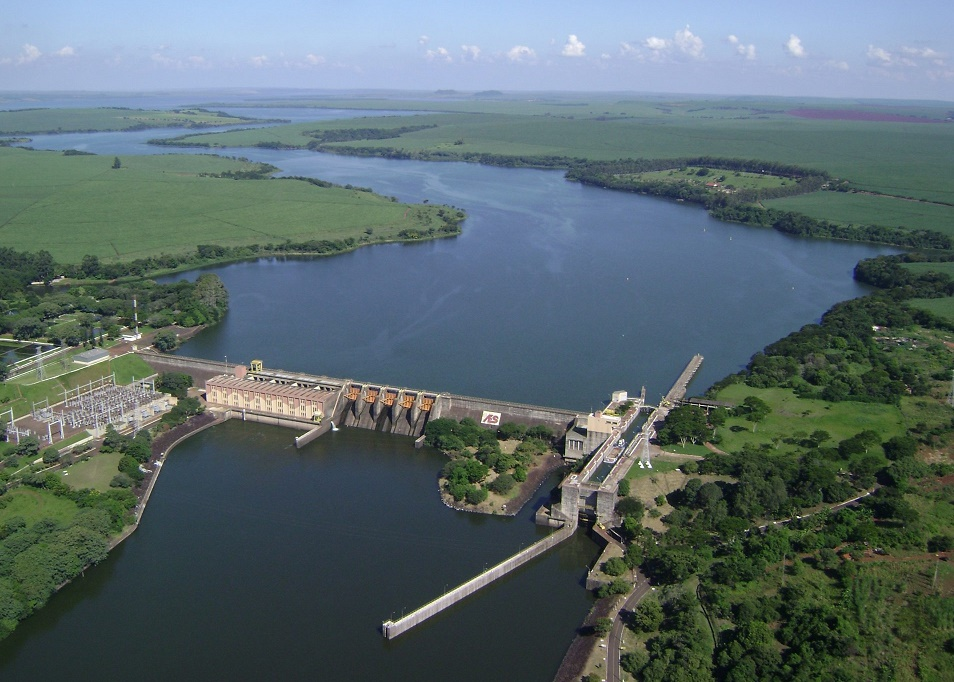

O rio Tietê é um curso de água brasileiro conhecido nacionalmente por atravessar, ao longo de cerca de mais ou menos seus 1100, 1150 quilômetros de extensão, praticamente todo estado de São Paulo, de leste a oeste, além de marcar a geografia urbana da maior cidade do país, a capital paulista. O nome TIETÊ vem da origem tupi e significa “rio verdadeiro” ou “águas verdadeiras”.
O rio nasce no município paulista de Salesópolis, na Serra do Mar, a 22 km do oceano Atlântico e a 96 km da Capital, a uma altitude de 1.030 metros da Serra do Mar, ele subverte a natureza: como não consegue vencer os picos rochosos rumo ao litoral, em vez de buscar o mar - como a maior parte dos rios que corre para o mar – o Tietê atravessa a Região Metropolitana de São Paulo na direção sudeste a noroeste e segue para o interior do Estado, desaguando posteriormente no rio Paraná, na divisa entre os municípios de Itapura, ainda no estado de São Paulo, e de Três Lagoas, já no estado do Mato Grosso do Sul.

O Tietê nasce no município de Salesópolis, a 22 km do oceano Atlântico, e corre para o interior de São Paulo, sendo assim, foi muito utilizado pelos índios e bandeirantes para acessar as vilas que se encontravam ao longo do rio.
Embora seja um dos rios mais importantes economicamente para o estado de São Paulo e para o país, o rio Tietê ficou mais conhecido pelos seus problemas ambientais, especialmente no trecho em que banha a cidade de São Paulo. Não faz muito tempo que o rio Tietê se tornou poluído. Ainda na década de 1960, o rio tinha até peixes no seu trecho da capital. Porém, a degradação ambiental do rio Tietê teve início de maneira sutil na década de 1920, com a construção da represa de Guarapiranga, pela empresa canadense Light, para posterior geração de energia elétrica nas usinas hidrelétricas Edgar de Souza e Rasgão, localizadas em Santana de Parnaíba. Esta intervenção alterou o regime de águas do rio na capital e foi acompanhada de alguns trabalhos de retificação também pela Light, que deixaram o leito do rio na área da capital menos sinuoso, nas regiões entre os bairros Vila Maria e Freguesia do Ó.
Porém, ainda nas décadas de 1920 e 1930, o rio era utilizado para pesca e atividades desportivas: eram famosas as disputas de esportes náuticos no rio. Nesta época, clubes de regatas e natação foram criados ao longo do rio, como o Clube de Regatas Tietê e o Clube Esperia, que existem até hoje. O processo de degradação do rio por poluição industrial e esgotos domésticos no trecho da Grande São Paulo tem origem principalmente nos processos de industrialização e de expansão urbana desordenada ocorrido nas décadas de 1940 a 1970, acompanhado pelo aumento populacional ocorrido no período, em que o município evoluiu de uma população de 2 000 000 de habitantes na década de 1940 para mais de 6 000 000 na década de 1960.
São 62 os municípios banhados pelo rio, e seu leito abrange seis sub-bacias hidrográficas:
Alto Tietê: área da nascente do rio, abrangendo a região metropolitana de São Paulo;
Sorocaba/Médio Tietê: abrange 34 municípios, dos quais dezesseis estão na sub-bacia do Médio Tietê;
Piracicaba-Capivari-Jundiaí: esta subdivisão inclui municípios paulistas e mineiros, sendo que a maioria (92,6%) são de municípios paulistas;
Tietê/Batalha: abrange a área de Itápolis, Lins, Matão, Novo Horizonte e Taquaritinga;
Tietê/Jacaré: compreende 34 municípios, localizando-se no centro do estado, entre as cidades de Araraquara, Bauru, Jaú, Lençõis Paulista e São Carlos;
Baixo Tietê: localiza-se a noroeste do estado, indo da corredeira de Laje até a foz no rio Paraná. Há apenas uma cidade maior importância na área: Andradina;
Atualmente, o rio é utilizado para abastecimento de água da população de diversas cidades, como Araçatuba. As águas são captadas a uma distância de 15 km, produzindo cerca de 5 milhões de litros diários, com capacidade de expansão até 24 milhões de litros diários. O município é a primeira cidade não ribeirinha a captar água deste rio.
O Tietê cruza a Região Metropolitana de São Paulo e percorre 1 136 quilômetros ao longo de todo o interior do estado, até o município de Itapura, em sua foz no rio Paraná, na divisa com o Mato Grosso do Sul. No município de São Paulo, é margeado pela Marginal Tietê, que é o principal eixo viário da cidade.

Logo após sair do município de São Paulo, o rio Tietê encontra, no município de Santana de Parnaíba, a Usina Hidrelétrica Edgard de Sousa e, um pouco mais adiante, a Hidrelétrica de Rasgão e, entre estas as duas, a Barragem de Pirapora do Bom Jesus. Ambas as hidrelétricas foram construídas pela antiga Light e muito contribuíram para a geração de energia para a cidade de São Paulo.
Ao longo do rio Tietê, foram construídas muitas barragens com o intuito de se aproveitar o potencial hidrelétrico. Entre estas, podem-se citar:
A Barragem da Usina Parque de Salesópolis, em Salesópolis
A Usina Hidrelétrica Edgard de Sousa, em Santana de Parnaíba
A Barragem de Pirapora do Bom Jesus, em Pirapora do Bom Jesus
A Barragem de Rasgão, no município de Pirapora do Bom Jesus
A Barragem Laras, próxima a Laranjal Paulista
A Barragem de Anhembi, próxima à cidade de Anhembi.
A Barragem de Barra Bonita, próxima à cidade de Barra Bonita
A Barragem Bariri, próxima à cidade de Bariri.
A Barragem Ibitinga, entre as localidades de Borborema, Ibitinga e Iacanga
A Usina Hidrelétrica Mário Lopes Leão, próxima às cidades de Promissão e Avanhandava
A Barragem Três Irmãos - Permitiu o aproveitamento de parte da água do Tietê na usina de Ilha Solteira através do desvio pelo Canal Pereira Barreto que interliga os lagos das duas barragens.
A U.H.E Nova Avanhandava, no município de Buritama, próximo a Araçatuba.

Mas porque estamos falando isso tudo para você caro leitor?
Queremos mostrar um pouco do que está contecendo em nossa volta, e mostrar a vocês que a poluição atingi a nós sim, e que pode acabar nos prejudicando e também o futuro de nossos filhos.
A nossa empresa quer ajudar a mudar esse final trágico, e ter um lugar mais limpo, bonito e ótimo de se morar. E para isso precisamos da sua colaboração, fazendo não só denúncias mas nos indicando lugares onde precisa de um cuidado maior, e nos informando sobre o que mais podemos fazer para auxiliar a cidade de São Paulo.